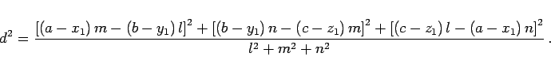
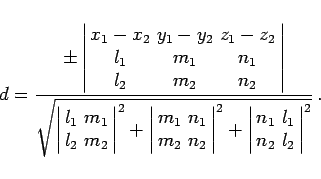

Inhalt Index DeskTop Bronstein

 Geometrie Vektoralgebra und analytische Geometrie Analytische Geometrie des Raumes Gerade und Ebene im Raum
Geometrie Vektoralgebra und analytische Geometrie Analytische Geometrie des Raumes Gerade und Ebene im Raum


Der Abstand d des Punktes M(a,b,c) von einer Geraden, die gemäß (3.415a) gegeben ist ergibt sich zu:
|  | (3.419) |
Wenn die Geraden gemäß (3.415a) gegeben sind, beträgt ihr Abstand
|  | (3.420) |
Verschwindet die im Zähler stehende Determinante, dann ist die Bedingung dafür erfüllt, daß sich die beiden Geraden im Raum schneiden.